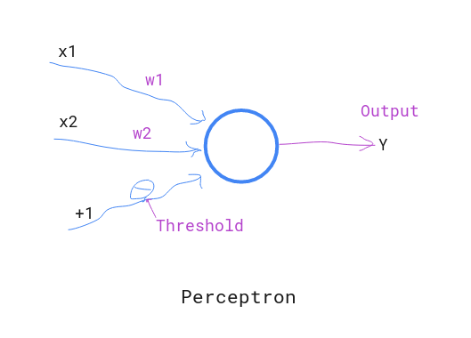

Perceptron is simply an artificial neuron capable of solving linear classification problems. It is made up of single layer feed-forward neural network.
A percentron can only takes binary input values and signals binary output for decision making. The output decision (either0 or 1), is based on the value of weighted sum of inputs and weights.
Mathematically perceptron can be defined as :
output O(n)=
{
0 if ∑wixi + $\theta$ <= 0
1 if ∑wixi + $\theta$ > 0
}
$\theta$ = threshold / bias

Perceptron Learning Algorithm¶
Perceptron learning is basically done by adjusting the weights and bias in training process.
Initially, we will have training set of input vector
[x_1(n), x_2(n),....x_m(n) ]
And, weight vetor
[w_1(n), w_2(n),....w_m(n)]
And, bias = b
For convenience let w0=b(n) and x0(n) = 1
i.e input vector = [1, x_1(n),x_2(n),.....x_m(n)]
and weight vector = [b(n), w_1(n), w_2(n),....,w_m(n)]
y(n) = actual output in training
d(n) = desired output
η = the learning rate
And, suppose, M and N are two different classes. Where output +1 belongs to M and -1 belongs N.
learning steps:
1. Initialization¶
We will set initial value for weights : w(0) = 0
2. For number of iterations (Iternations will be your selection)¶
a. Activation¶
We will supply (input vector, desired output) = [x(n), d(n)] to perceptron.
b. Actual Response¶
For each input vector, we will calculate the actual output based on
y(n) = sgn[w(n)x(n)]
Where sgn(.) represents signum function as following:
sgn(x) = { +1 if x>=0
-1 if x<0 }
c. Weight adjustment :¶
We will adjust the weight vector as follows:
calculate error :
e = d(n) - y(n)
w(n+1) = w(n) + eta * e * x(n)
where
d(n) = { +1 if x(n) classified as M
-1 if x(n) classified as N
}